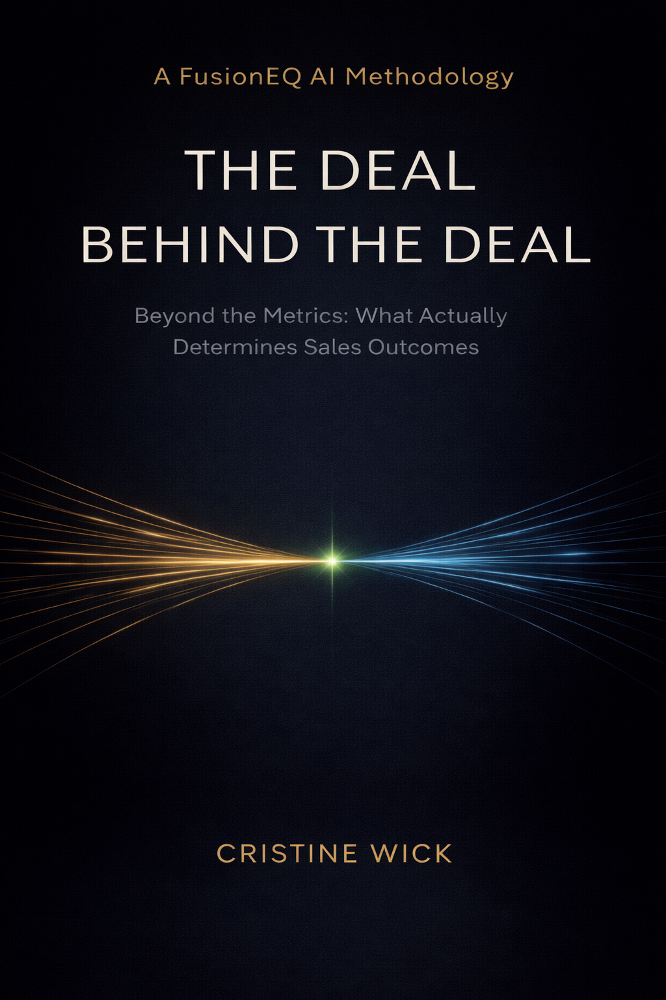

The Story Beneath the Pipeline
The Deal Behind the Deal
Beyond the Metrics: What Actually Drives Sales Outcomes
The pipeline tells a story. But it’s not the whole story.
This book introduces the hidden layer inside every opportunity: human dynamics, misalignment, unspoken risk, and incomplete understanding.

From the Introduction
This book is for the deals that look qualified, active, and on track—until they aren’t.
It is for the seller who believed the deal was moving, and for the manager who trusted the update, forecasted it upward, and then had to watch it stall.
The stage was right. The activity was there. The next steps were defined.
Nothing looked broken.
And that was the problem.
Because the pipeline tells you what is happening. It does not tell you what it means.
That gap between what you can see and what is actually shaping the deal is where most opportunities are won or lost.
I call that the deal behind the deal.
Strategic Insight
The problem isn’t your methodology.
It’s what your methodology can’t see.
Chapter 1 Hook
I respected the process. But I knew it wasn’t the whole story.
I’ve spent more than thirty years in sales. I have managed to the numbers, reported on them, been measured by them, and used them to make decisions.
Metrics matter. Process matters. Methodology matters.
But in a pipeline review, I remember looking at a deal where everything seemed right. The stage was right. The process had been followed. The CRM looked clean.
And still, I knew something was missing.
That was the beginning of the idea behind this book: the real deal is often hidden underneath the visible one.
Why It Matters
Numbers measure outcomes. People create them.
Modern sales has become structured, data-driven, and metric-heavy. But qualified deals still stall. Forecasts still fail. Opportunities that look solid still fall apart.
Because data shows what is happening, but not always why.
The Hidden Layer
There is always another layer.
A hidden dynamic shaping the decision. A conversation that didn’t happen. A signal that was missed. A misalignment no one fully named. A risk everyone felt, but no one captured in the CRM.
This is the deal behind the deal.
What the Book Shows You
How to see the risk before it becomes the miss.
Inside the Book
A practical arc for reading what the pipeline can’t show.
1. The Deal Behind the DealThe visible deal and the real deal are not always the same.
2. False MomentumActivity can make a deal look alive when nothing is moving.
3. The Metrics Are Not the MeaningMetrics describe the deal. Meaning explains it.
4. The Hidden Buying GroupThe decision-maker does not decide alone.
5. The Champion ProblemSupport is not influence.
6. Misalignment No One NamesAgreement is not alignment.
7. What AI Can SeeAI can reveal patterns. Humans interpret meaning.
8. The FUSION FrameworkFUSION is not a checklist. It is a way to read the deal.
9. Reading the Deal Before It SlipsThe earlier you name the risk, the more options you have.
10. A New Way to Lead Sales ConversationsSales leadership has to shift from tracking deals to understanding them.
FusionEQ Methodology
FusionEQ is a system for interpreting what traditional sales systems cannot see.
It is not a replacement for methodology. It is not another qualification framework. It sits on top of the process as an interpretation layer, helping sellers and managers read the missing layer inside complex sales decisions.
Example Use Case
A $1M utilities deal can look strong and still require a deeper read.
Author
Cristine Wick
Cristine Wick is a 30-year enterprise sales professional and longtime individual contributor who has closed complex, high-stakes enterprise deals. Known for her ability to read what others miss, she developed the FusionEQ™ methodology to help sellers and sales leaders interpret the hidden dynamics that determine whether deals stall, slip, or close.
Her work sits at the intersection of emotional intelligence and artificial intelligence, bringing a new lens to modern sales performance.
Read the book. Then bring the same questions to the deals you’re working now.
Because the difference between a deal that closes and a deal that stalls is often what you didn’t see.